6.3 导航功能包与实时避障
本节在已有二维栅格地图的基础上，实现机器人"在地图上定位 + 路径规划 + 自主导航 + 实时避障"。 与 6.1、6.2 的 Gazebo 物理仿真不同，本节使用 arbotix 假仿真：不启动 Gazebo 物理引擎，只用软件 模拟一台差速机器人的里程计与运动，配合 map_server + fake_localization + move_base 完成导航， 并支持 rviz 中的 2D Nav Goal 手动导航与 random_navigation 随机自动导航。
本节配套功能包位于仓库：
src/chap6/catkin_ws/src/mrobot_bringup/ # arbotix 假机器人启动配置（精简版）
src/chap6/catkin_ws/src/mrobot_description/ # 假仿真使用的简化 URDF 模型
src/chap6/catkin_ws/src/mrobot_navigation/ # move_base、fake_localization、代价地图、随机导航脚本
1. 本节目标
- 理解自主导航要解决的两大问题——定位与路径规划；
- 理解
move_base的工作机制、全局/局部规划器与两层代价地图（costmap）； - 理解 arbotix 假仿真与
fake_localization的作用，理清完整的 TF 坐标树； - 安装
navigation、arbotix功能包； - 准备精简版
mrobot_bringup、mrobot_description并修复 Noetic 兼容问题； - 用两个终端启动假机器人与导航，在 rviz 中用 2D Nav Goal 手动导航；
- 运行
random_navigation随机自动导航，并分析 Python3 下的字典采样报错与修复。
2. 背景知识
2.1 自主导航的两大问题
移动机器人在一张已知地图上自主走到目标点，需要回答两个问题：
- 我在哪里（定位，Localization）：确定机器人当前在地图坐标系中的位姿（位置 x、y 与朝向 yaw）；
- 我该怎么去（路径规划，Planning）：在地图上找到一条从当前位姿到目标点、不与障碍物碰撞的路径， 并把它转换成电机可执行的速度指令。
真实机器人通常用 AMCL（自适应蒙特卡洛定位） 解决第一个问题，用 move_base 解决第二个问题。
本节的假仿真用 fake_localization 代替 AMCL，获得"完美定位"，以便把注意力集中在导航框架本身。
2.2 move_base 与两大规划器
move_base 是 ROS 导航栈的核心节点，它对外提供一个 move_base 的 action 接口
（MoveBaseAction）：客户端只需下发一个目标位姿，move_base 就会负责规划并执行，期间反馈状态、
完成后返回结果。其内部主要包含两个规划器：
| 规划器 | 作用 | 本节实现 |
|---|---|---|
| 全局规划器（Global Planner） | 在整张地图上做全局寻路，生成从当前点到目标点的全局路径 | navfn/global_planner（Dijkstra/A* 类算法） |
| 局部规划器（Local Planner） | 在机器人附近滚动地采样速度、预测短轨迹，输出实时 cmd_vel，并负责避障 |
base_local_planner 的 TrajectoryPlannerROS（DWA 思路） |
执行时，局部规划器以全局路径为引导，结合周围障碍物持续生成速度指令；若局部规划器发现无路可走，
可触发恢复行为（如清障、原地旋转）。本节配置 recovery_behavior_enabled: false，关闭了恢复行为。
2.3 代价地图 costmap
move_base 维护两张代价地图（Costmap2D），把不同来源的信息叠加成每个格子的"代价值"：
- 全局代价地图（global_costmap）：覆盖整张地图，分辨率 0.01 m，长期稳定，供全局规划使用；
- 局部代价地图（local_costmap）：只覆盖机器人周围 6 m × 6 m 的窗口，随机器人滚动更新，供局部规划使用。
代价地图采用分层（layer）结构，从下到上依次叠加：
- 静态层（static_layer）：直接加载 map_server 提供的静态地图，墙体等固定障碍来自这里；
- 障碍层（obstacle_layer）：根据实时传感器（
/scan）标记/清除动态障碍； - 膨胀层（inflation_layer）：在障碍物周围按机器人半径膨胀出一圈缓冲，避免机器人贴墙、刮蹭。
本节的假仿真方案不发布真实的
/scan话题（简化 URDF 中激光雷达只有外形、没有 Gazebo 激光插件）， 因此障碍层没有实时数据，代价地图主要依赖静态地图。rviz 中 LaserScan 项无数据，但不会报错。
2.4 arbotix 假仿真与 fake_localization
arbotix 假仿真由 arbotix_python/arbotix_driver 提供，启动时设置 sim:=true：
- 它用软件模拟一个差速控制器（
diff_controller），订阅cmd_vel，按base_width、ticks_meter等参数对速度积分，计算出假的里程计，发布/odom话题与odom → base_footprint的 TF，同时发布关节状态； - 整个过程不启动 Gazebo、不做物理碰撞计算，也不真正打开串口（配置里的
port: /dev/ttyUSB0在 sim 模式下仅作占位），因此几乎不消耗物理算力，"假仿真"由此得名。
fake_localization（假定位）用来代替真实的 AMCL：
- 它订阅里程计，把
odom中的位姿直接包装成 AMCL 风格的/amcl_pose与/particlecloud（粒子云）； - 它不做任何概率估计，默认里程计位姿就是真实位姿，因此是"完美定位"，不存在定位误差和粒子发散。
2.5 TF 坐标树
定位与导航都依赖一条完整、无冲突的 TF 坐标树。本节各节点共同维护的坐标关系如下：
map
└── odom static_transform_publisher（map→odom 恒等变换）
└── base_footprint arbotix 的 diff_controller（假里程计）
└── base_link robot_state_publisher（依据 URDF）
└── ... 电机、轮、板件 ...
└── laser_link
map → odom：由static_transform_publisher发布为零平移、零旋转的恒等变换；odom → base_footprint：由 arbotix 假控制器随运动持续发布；base_footprint → base_link → ... → laser_link：由robot_state_publisher解析 URDF 静态发布。
3. 安装功能包
开始前先确认源码目录中包含 mrobot 各功能包，能看到 mrobot_bringup、mrobot_description、
mrobot_gazebo、mrobot_navigation、mrobot_teleop 五个包：
ls ~/ros_exploring_src/robot_mrobot
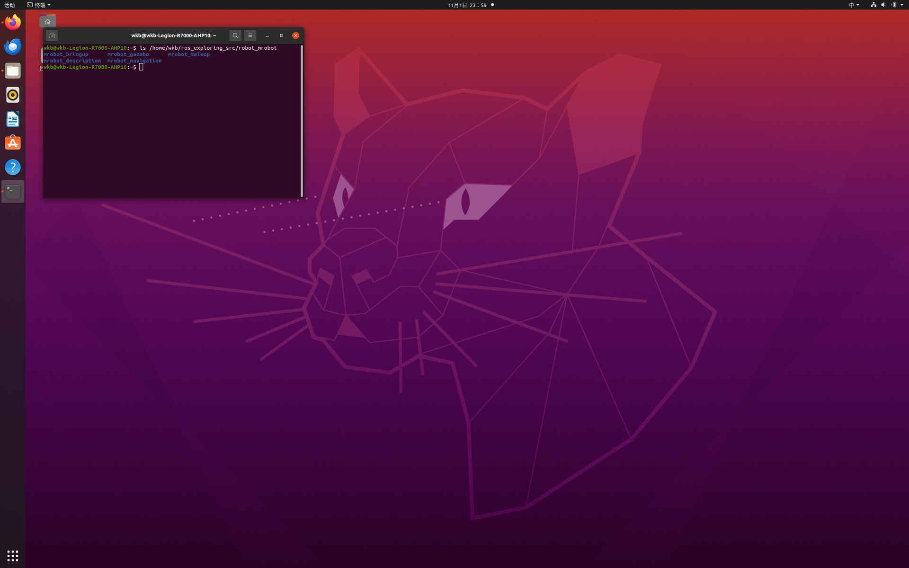
更新软件源并安装导航元包与 arbotix：
sudo apt update
sudo apt install -y ros-noetic-navigation ros-noetic-arbotix
ros-noetic-navigation：导航元包，自动带入move_base、amcl、fake_localization、global_planner、navfn、costmap_2d、base_local_planner、dwa_local_planner、map_server等；ros-noetic-arbotix：提供arbotix_python、arbotix_controllers、arbotix_msgs、arbotix_sensors等。
安装时会列出大量将要安装的包：
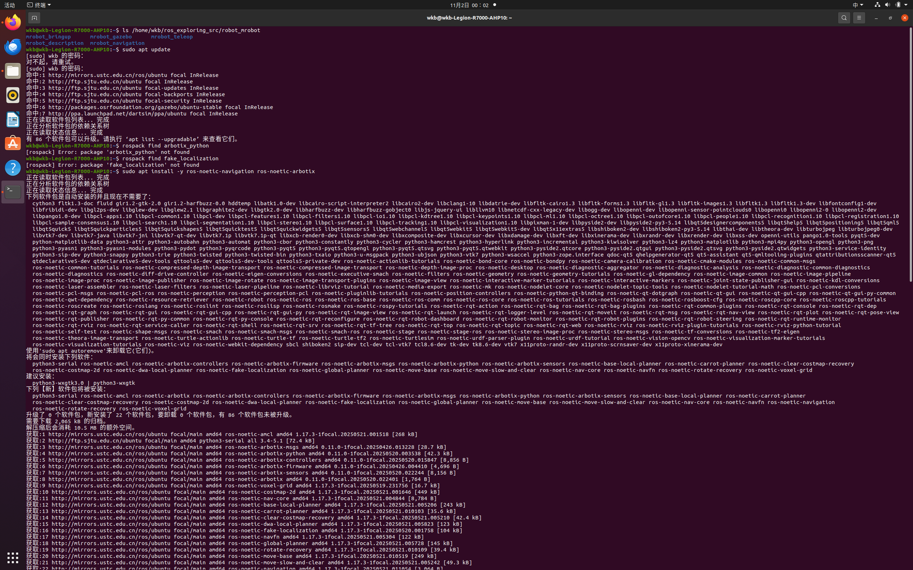
看到 "新安装了 22 个软件包" 且无报错即成功。用以下命令验证关键包可被找到：
rospack find arbotix_python
rospack find fake_localization
两条分别打印 /opt/ros/noetic/share/arbotix_python 与 /opt/ros/noetic/share/fake_localization：
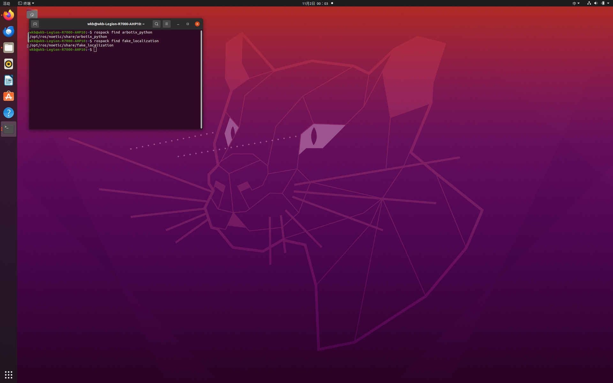
4. 准备精简版 mrobot_bringup
原始 mrobot_bringup 除了假仿真 launch 外，还包含真实硬件的 C++ 驱动（会在全局构造时打开
/dev/ttyUSB0 串口）以及多个无关 launch、脚本。假仿真用不到这些，因此只保留需要的 launch 与
arbotix 配置，并补写精简的构建文件。
4.1 创建目录并复制文件
mkdir -p ~/catkin_ws/src/mrobot_bringup/launch
mkdir -p ~/catkin_ws/src/mrobot_bringup/config
cp ~/ros_exploring_src/robot_mrobot/mrobot_bringup/launch/fake_mrobot_with_laser.launch \
~/catkin_ws/src/mrobot_bringup/launch/
cp ~/ros_exploring_src/robot_mrobot/mrobot_bringup/config/fake_mrobot_arbotix.yaml \
~/catkin_ws/src/mrobot_bringup/config/
4.2 修复 launch 的两处 Noetic 不兼容
# ① 删除已废弃的 --inorder 参数（Noetic 默认按文档顺序处理 xacro）
sed -i 's#xacro --inorder #xacro #g' \
~/catkin_ws/src/mrobot_bringup/launch/fake_mrobot_with_laser.launch
# ② state_publisher 在 Noetic 中已移除，改回 robot_state_publisher
sed -i 's#type="state_publisher"#type="robot_state_publisher"#g' \
~/catkin_ws/src/mrobot_bringup/launch/fake_mrobot_with_laser.launch
复制与修复命令执行后无报错：
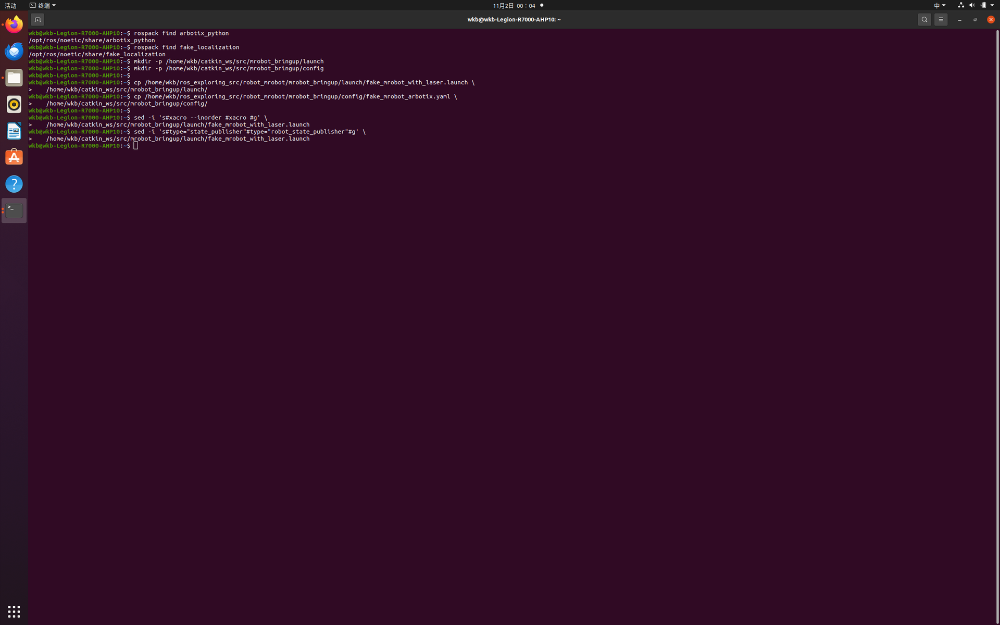
4.3 写入精简的构建文件
cat > ~/catkin_ws/src/mrobot_bringup/package.xml <<'EOF'
<?xml version="1.0"?>
<package format="2">
<name>mrobot_bringup</name>
<version>1.0.0</version>
<description>mrobot 启动配置：使用 arbotix 假仿真加载带激光雷达的机器人（fake 导航，不启动 Gazebo）</description>
<maintainer email="wkb@example.com">wkb</maintainer>
<license>BSD</license>
<buildtool_depend>catkin</buildtool_depend>
<exec_depend>arbotix_python</exec_depend>
<exec_depend>xacro</exec_depend>
<exec_depend>robot_state_publisher</exec_depend>
<exec_depend>joint_state_publisher</exec_depend>
<exec_depend>mrobot_description</exec_depend>
</package>
EOF
cat > ~/catkin_ws/src/mrobot_bringup/CMakeLists.txt <<'EOF'
cmake_minimum_required(VERSION 3.0.2)
project(mrobot_bringup)
# 本包仅包含 launch 与 arbotix 配置，不编译 C++ 节点。
find_package(catkin REQUIRED)
catkin_package()
EOF
4.4 验证
ls -R ~/catkin_ws/src/mrobot_bringup
grep -nE 'inorder|state_publisher|robot_state_publisher' \
~/catkin_ws/src/mrobot_bringup/launch/fake_mrobot_with_laser.launch
grep 输出两行：第 15 行是 joint_state_publisher、第 16 行是 robot_state_publisher（正则 state_publisher 会同时匹配这两个名字）。其中节点类型已为 robot_state_publisher，没有独立的 type="state_publisher"，也没有 --inorder：
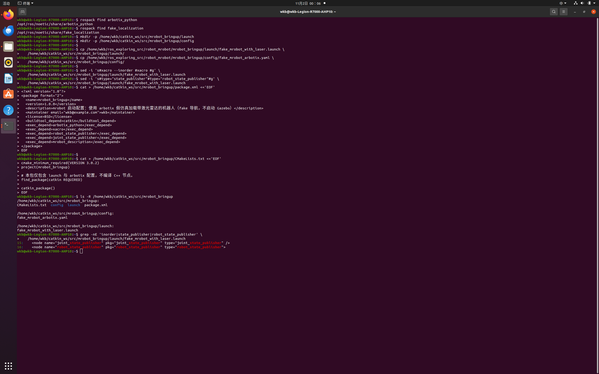
5. 准备 mrobot_navigation 导航文件
6.2 的 gmapping launch、rviz 与自己建的地图全部保留，下面只新增假导航需要的文件。
5.1 复制 launch、代价地图配置、rviz、地图
NAV=~/catkin_ws/src/mrobot_navigation
SRC=~/ros_exploring_src/robot_mrobot/mrobot_navigation
mkdir -p $NAV/launch $NAV/config/fake $NAV/rviz $NAV/maps $NAV/scripts
cp $SRC/launch/fake_move_base.launch $SRC/launch/fake_nav_demo.launch $NAV/launch/
cp $SRC/config/fake/*.yaml $NAV/config/fake/
cp $SRC/rviz/nav.rviz $NAV/rviz/
cp $SRC/maps/gmapping_map.yaml $SRC/maps/gmapping_map.pgm $NAV/maps/
5.2 复制并修复 random_navigation.py
NAV=~/catkin_ws/src/mrobot_navigation
SRC=~/ros_exploring_src/robot_mrobot/mrobot_navigation
cp $SRC/scripts/random_navigation.py $NAV/scripts/
# shebang 改为 python3
sed -i '1c\#!/usr/bin/env python3' $NAV/scripts/random_navigation.py
# 加可执行权限
chmod +x $NAV/scripts/random_navigation.py
5.3 验证
NAV=~/catkin_ws/src/mrobot_navigation
python3 -m py_compile $NAV/scripts/random_navigation.py && echo "random_navigation 语法 OK"
head -1 $NAV/scripts/random_navigation.py
ls -l $NAV/scripts/random_navigation.py
ls -l $NAV/maps/gmapping_map.*
首行为 #!/usr/bin/env python3、权限含 x、gmapping_map.pgm 为 278584 字节（约 272 KB）：
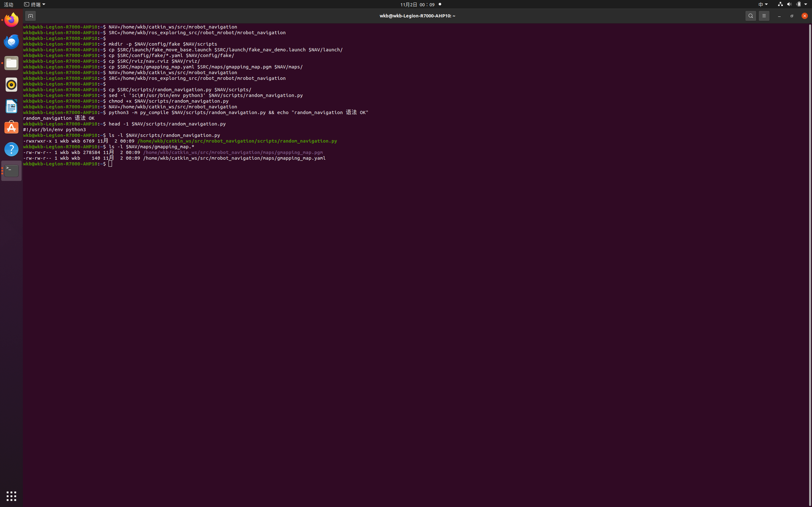
random_navigation中的 p1~p6 目标坐标与gmapping_map这张办公室地图是配套的，因此自动导航 必须使用gmapping_map，不能换成 6.2 自己建的 my_room 小地图，否则目标点会落到地图外或墙体里。
6. 准备 mrobot_description 并修复 xacro 前缀
假仿真配套的是简化版 mrobot_description（关节名为 left_wheel_joint、right_wheel_joint，无
Gazebo 插件），与 6.1 放在 mrobot_gazebo/urdf 下的 Gazebo 版模型不是同一套，二者互不冲突。
与 6.1 相同的坑：Noetic 新版 xacro 不展开不带 xacro: 前缀的宏，需把
mrobot_with_rplidar.urdf.xacro 中的 <mrobot_body/> 加上前缀：
sed -i 's#<mrobot_body/>#<xacro:mrobot_body/>#g' \
~/catkin_ws/src/mrobot_description/urdf/mrobot_with_rplidar.urdf.xacro
grep -n 'mrobot_body' \
~/catkin_ws/src/mrobot_description/urdf/mrobot_with_rplidar.urdf.xacro
第 12 行显示 <xacro:mrobot_body/>，不再有裸的 <mrobot_body/>：
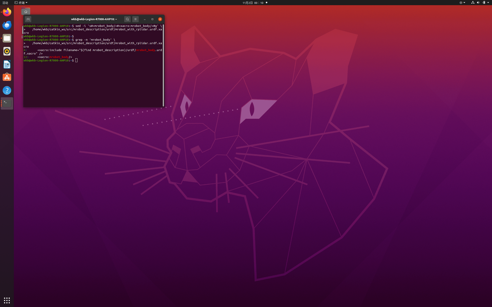
7. 编译工作空间
cd ~/catkin_ws
catkin_make
source devel/setup.bash
编译成功，末尾出现 [100%] Built target ...，中间的 Gazebo/costmap 黄色 deprecated 警告可忽略：
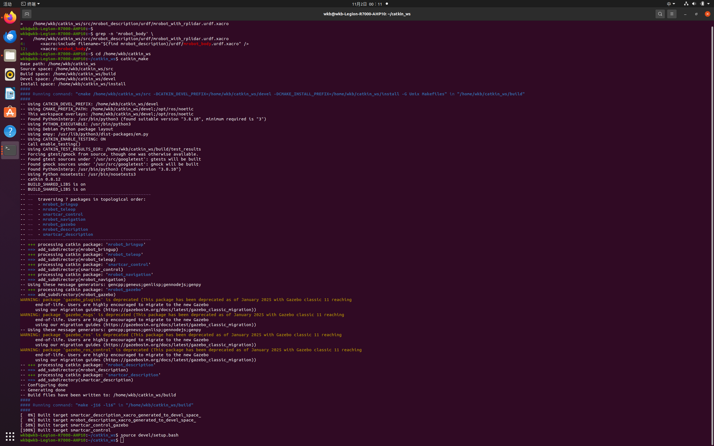
8. 启动假仿真与导航
需要 2 个终端，每个终端先执行一次环境加载（若 .bashrc 已配置可省略）：
source ~/catkin_ws/devel/setup.bash
8.1 终端 1——启动假机器人（arbotix）
roslaunch mrobot_bringup fake_mrobot_with_laser.launch
启动后不报错、停在运行状态，关键日志为：
[INFO] ArbotiX being simulated.
[INFO] Started DiffController (base_controller). Geometry: 0.26m wide, 4100.0 ticks/m.
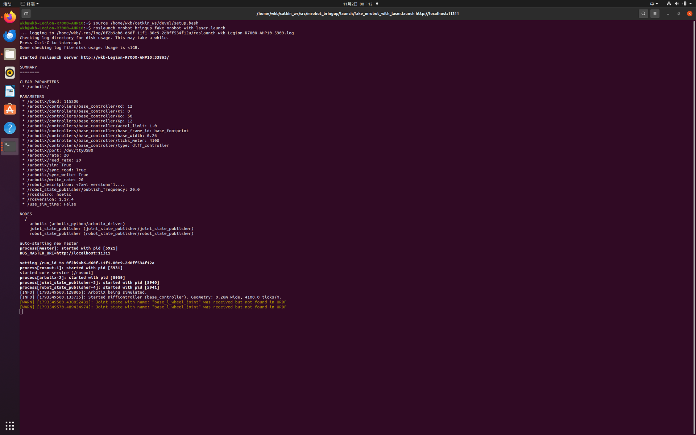
若此处报
cannot launch node of type [arbotix_python/arbotix_driver]，说明第 3 节 arbotix 未安装或未 source，回到第 3 节处理后再启动。
8.2 终端 2——启动顶层导航 launch
roslaunch mrobot_navigation fake_nav_demo.launch
该 launch 依次启动 map_server（加载 gmapping_map）、move_base（加载 config/fake 全套参数）、
fake_localization、map→odom 静态变换，以及 rviz。日志显示收到 512 X 544 map @ 0.05 m/pix、
全局/局部代价地图三层加载、Created local planner ... TrajectoryPlannerROS、odom received!。
rviz 自动打开并加载出办公室地图，左侧包含 Map、Local/Global Plan、PoseArray(粒子云)、LaserScan、 Goal Pose、Inflated Obstacles 等，Global Status 为 Ok：
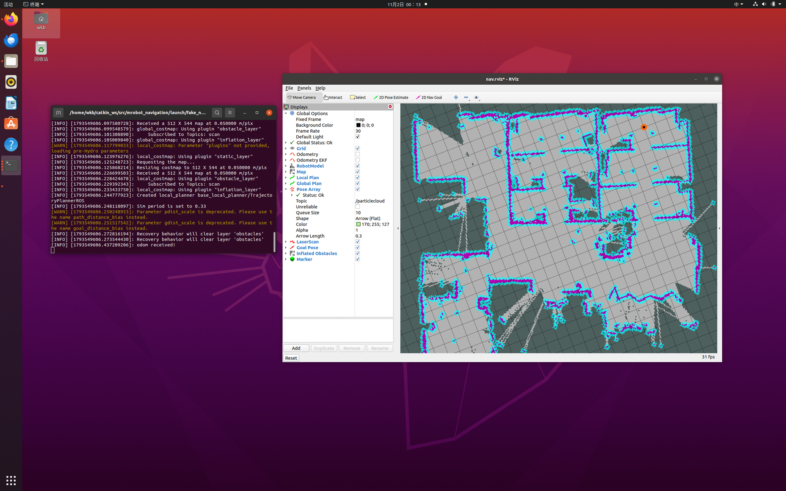
9. 用 2D Nav Goal 手动导航
- 点击 rviz 顶部工具栏的 2D Nav Goal；
- 在地图空旷处按住左键拖动——落点是目标位置，拖出的箭头方向是机器人最终朝向；
- 松开后，地图上出现绿色的全局路径（Global Plan）与局部路径（Local Plan），机器人模型沿路径移动；
- 到达后可再设几个不同位置的目标点，反复观察。
设置目标点后，move_base 规划出绕开障碍物的全局路径：
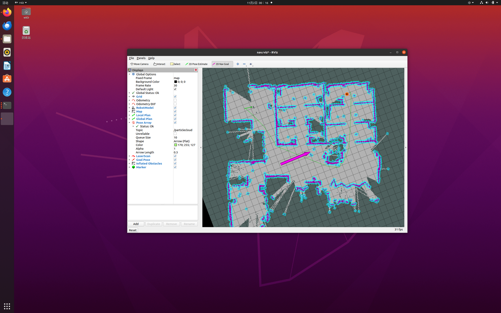
机器人沿路径实时跟随移动：
更换目标点后重新规划、继续导航：
10. random_navigation 随机自动导航
保持终端 1、终端 2 运行，新开第 3 个终端执行：
source ~/catkin_ws/devel/setup.bash
rosrun mrobot_navigation random_navigation.py
10.1 Python3 字典采样报错
首次运行时，脚本在随机选点阶段抛出异常：
Traceback (most recent call last):
File ".../random_navigation.py", line 167, in <module>
NavTest()
File ".../random_navigation.py", line 76, in __init__
sequence = sample(locations, n_locations)
File "/usr/lib/python3.8/random.py", line 359, in sample
raise TypeError("Population must be a sequence or set. For dicts, use list(d).")
TypeError: Population must be a sequence or set. For dicts, use list(d).
[INFO] Stopping the robot...
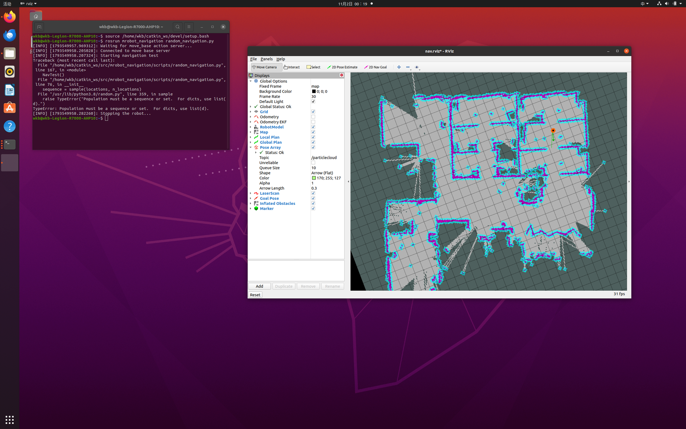
根因是 Python2 与 Python3 中 random.sample() 的行为差异：
- 脚本里
locations是一个字典（键是p1~p6，值是目标位姿）； - Python2 的
sample可以直接接受字典，对它的键采样； - Python3 的
sample只接受序列（list/tuple）或集合（set），拒绝字典，并在报错中明确提示For dicts, use list(d)。
10.2 修复并重新运行
按报错提示，把字典显式转成键列表再采样：
sed -i 's#sequence = sample(locations, n_locations)#sequence = sample(list(locations), n_locations)#' \
~/catkin_ws/src/mrobot_navigation/scripts/random_navigation.py
# 验证
grep -n 'sample' ~/catkin_ws/src/mrobot_navigation/scripts/random_navigation.py
python3 -m py_compile ~/catkin_ws/src/mrobot_navigation/scripts/random_navigation.py && echo "语法 OK"
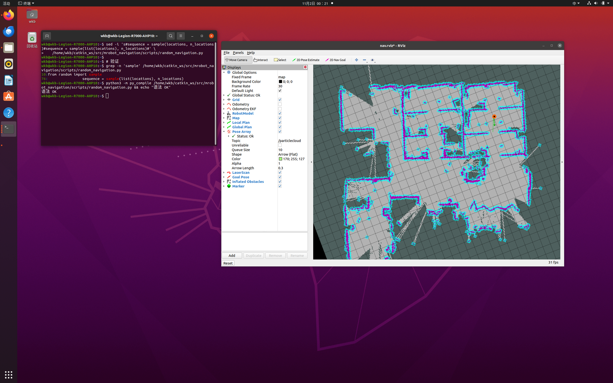
list(locations) 返回字典所有键的列表，sample 对这些键随机排序，后续仍按键取出对应位姿，
逻辑完全兼容。重新运行后机器人开始随机选点导航，第 1 个目标点成功：
Going to: p5
Goal succeeded!
State:3
Success so far: 1/1 = 100.0%
Running time: 0.1 min Distance: 1.3 m
第 2 个目标点成功，成功率保持 100%：
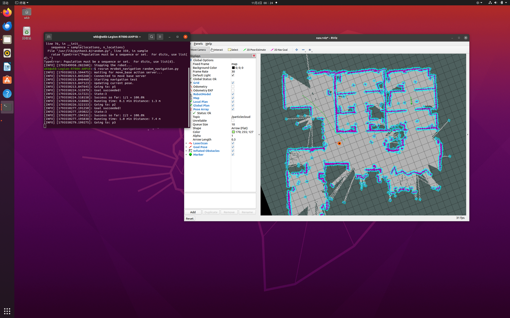
第 3 个目标点成功，距离与运行时间持续累计：
Success so far: 3/3 = 100.0%
Running time: 1.4 min Distance: 12.0 m
rviz 中可同时观察到粒子云、全局/局部路径、目标点与膨胀障碍物随自动导航实时更新：
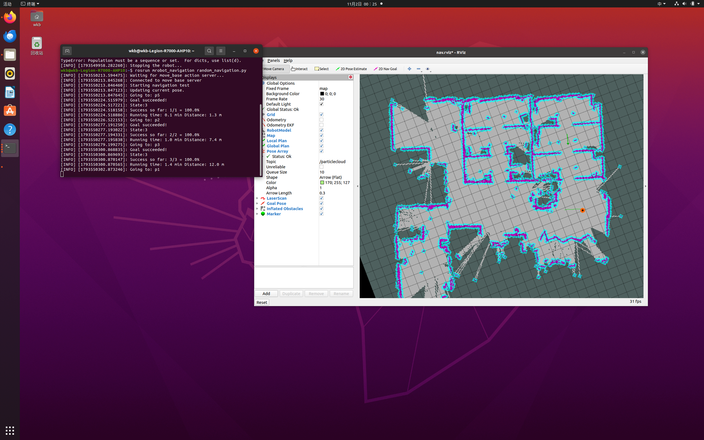
Python3 的整数除法
/为真除法，因此成功率会显示为100.0%而非教程 Python2 截图中的100%，仅是显示差异，不影响结果。
11. 关键参数解读
11.1 arbotix 差速控制器参数
fake_mrobot_arbotix.yaml 中 base_controller 的关键参数：
| 参数 | 取值 | 含义 |
|---|---|---|
type |
diff_controller |
差速控制器类型 |
base_frame_id |
base_footprint |
里程计发布的子坐标系 |
base_width |
0.26 |
左右轮间距（米） |
ticks_meter |
4100 |
每行进 1 米对应的编码器计数 |
Kp/Kd/Ki |
12/12/0 |
控制 PID 参数（sim 模式影响很小） |
11.2 代价地图参数
costmap_common_params.yaml 中两层代价地图共用的关键参数：
| 参数 | 取值 | 含义 |
|---|---|---|
obstacle_range |
2.5 |
2.5 m 内的障碍才被标记 |
raytrace_range |
3.0 |
3 m 内的空闲区域被光线追踪清除 |
robot_radius |
0.175 |
机器人半径，用于膨胀 |
inflation_radius |
0.1 |
障碍膨胀半径 |
observation_sources |
scan |
障碍观测来源（本方案无实时数据） |
11.3 局部规划器参数
base_local_planner_params.yaml 中 TrajectoryPlannerROS 的关键参数：
| 参数 | 取值 | 含义 |
|---|---|---|
controller_frequency |
3.0 |
控制（速度下发）频率 3 Hz |
max_vel_x / min_vel_x |
0.5 / 0.1 |
前向线速度上下限 |
max_vel_theta |
1.0 |
最大角速度 |
xy_goal_tolerance |
0.05 |
到达目标的位置容差 5 cm |
yaw_goal_tolerance |
0.1 |
到达目标的角度容差 0.1 rad |
sim_time |
1.0 |
每条候选轨迹的仿真时长 1 s |
dwa |
true |
采用 DWA 方式采样 |
recovery_behavior_enabled |
false |
关闭恢复行为 |
12. 常见问题
| 现象 | 原因 | 解决 |
|---|---|---|
cannot launch node of type [arbotix_python/arbotix_driver] |
arbotix 未安装或未 source | 安装 ros-noetic-arbotix，并 source devel/setup.bash |
rospack: package 'arbotix_python' not found |
只执行了 apt update，未 apt install |
执行 apt install ros-noetic-arbotix |
type="state_publisher" 启动异常 |
state_publisher 在 Noetic 已移除 |
改为 type="robot_state_publisher" |
xacro 警告 in-order processing became default |
launch 中仍带 --inorder |
删除 --inorder 参数 |
| 小车模型不显示/缺 link | 宏调用缺 xacro: 前缀 |
<mrobot_body/> 改为 <xacro:mrobot_body/> |
TypeError: Population must be a sequence or set |
Python3 的 sample 不接受字典 |
改为 sample(list(locations), n) |
| rviz 中 LaserScan 无数据 | 假仿真不发布 /scan |
正常现象，代价地图靠静态地图，可忽略 |
Joint state ... not found in URDF 警告 |
arbotix 关节名与 URDF 命名不一致 | 不影响导航，可忽略 |
pdist_scale/gdist_scale deprecated 警告 |
参数名已弃用 | 功能不受影响，可忽略 |
13. 小结
本节完成了基于 arbotix 假仿真的完整自主导航流程：安装 navigation、arbotix → 准备精简版
mrobot_bringup、mrobot_description 与 mrobot_navigation 并修复 Noetic 兼容问题 → 编译 →
两个终端启动假机器人与导航 → 在 rviz 中用 2D Nav Goal 手动导航 → 运行 random_navigation 随机
自动导航。过程中理清了 move_base 的全局/局部规划器、两层代价地图与完整 TF 树，并定位修复了
Python3 下 random.sample 不接受字典的问题，最终随机导航成功率保持 100%。
参考资料
- ROS Wiki：move_base 官方文档，http://wiki.ros.org/move_base
- ROS Wiki：navigation 导航栈，http://wiki.ros.org/navigation
- ROS Wiki：fake_localization 官方文档，http://wiki.ros.org/fake_localization
- ROS Wiki：arbotix_python 假仿真，http://wiki.ros.org/arbotix_python
- ROS Wiki：costmap_2d 代价地图，http://wiki.ros.org/costmap_2d
- 《ROS 机器人开发实践》，配套源码
ros_exploring（作者 胡春旭） - CSDN 教程：《ROS 导航——move_base 假仿真自主导航》